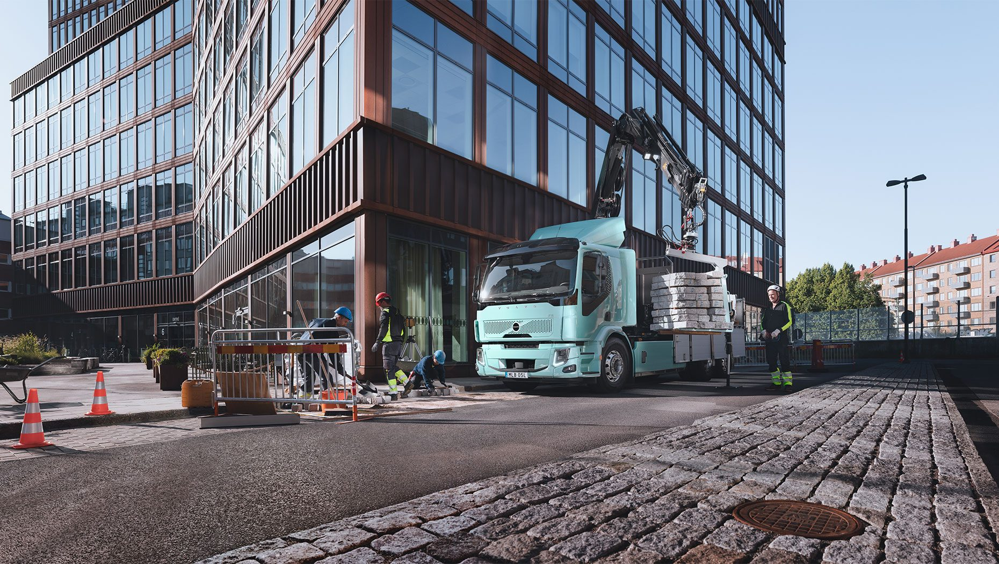

Small footprint, massive impact. Why choose between agility and capacity? The Volvo FE defies the odds, offering a high-density solution for waste collection and urban distribution.
It's the 'smooth operator' your fleet needs—fully adaptable to your specific superstructure and available in zero-emission Electric or efficient Gas/Diesel variants. Big capabilities, perfectly packaged.

Volvo FE
Applications: Delivery transport, urban construction, waste and recycling, municipal services
Power: 250-350 hp
Price: From 115.000 €
Availability: Australia, Europe, Middle East, Africa
Built-in safety
Navigate the urban maze with total clarity. We've combined slim-profile mirrors and expansive glazing to give you an uninterrupted view of your surroundings.
Inside, the FE is a powerhouse of safety innovation, exceeding GSR mandates to help you protect the people around you while you work.
Drive with confidence; protect with intelligence.
Power options
Fuel your mission with precision. With the Volvo FE, you choose between sustainable electric, clean gas, or proven diesel power.
Our diesel engines deliver up to 1400 Nm of torque, providing the muscular heart needed for both agile urban deliveries and heavy-duty construction tasks. Your task, your terrain, your power.
The smooth I-Shift
Where mechanical grit meets digital intelligence. The 12-speed I-Shift transmission is engineered to extract maximum value from every drop of fuel while delivering a ride of unparalleled smoothness.
With specialized software packages tailored to your specific mission, it's not just a gearbox—it's a performance optimizer for your entire powertrain. Smart shifting, sustainable power.
Shaped to work
Step up to the Volvo FE for that extra width and muscle your missions demand. While outperforming the FL in load capacity, it remains a master of the city streets.
With distinctively shaped LED lighting for maximum presence and a cockpit designed for total clarity through massive windows and aerodynamic mirrors,
it's the ultimate professional workspace. More load, more light, more control.
Working around the truck
Easy entry
Redefine your workflow with a cab that prioritizes your posture. The Volvo FE offers industry-leading accessibility, featuring a 440 mm low-entry variant that minimizes strain during high-frequency city stops.
Thanks to the integrated air suspension, you can calibrate your chassis height to match any dock or terrain. Precision ergonomics for the active professional.
Control around your truck
Where high-tech optics meet human-scale design. We've combined a low-profile cockpit with high-definition digital eyes to shatter blind spots.
Whether it's the radar-backed precision of Side Collision Avoidance or the intuitive view from our passenger-side cameras, you're always in sync with the city's rhythm.
Keep your team safe and your vision clear, no matter how crowded the road. Visibility that saves lives.
Access to power
Power your tools, your way. Whether you embrace the silent surge of Electric or the proven grit of Diesel, our versatile Power Take-Off (PTO) solutions ensure your pumps, tippers, and compactors never skip a beat.
With a chassis engineered for effortless customization, the Volvo FE/FL transforms from a mere vehicle into the ultimate specialized workplace. Your equipment, fully energized.